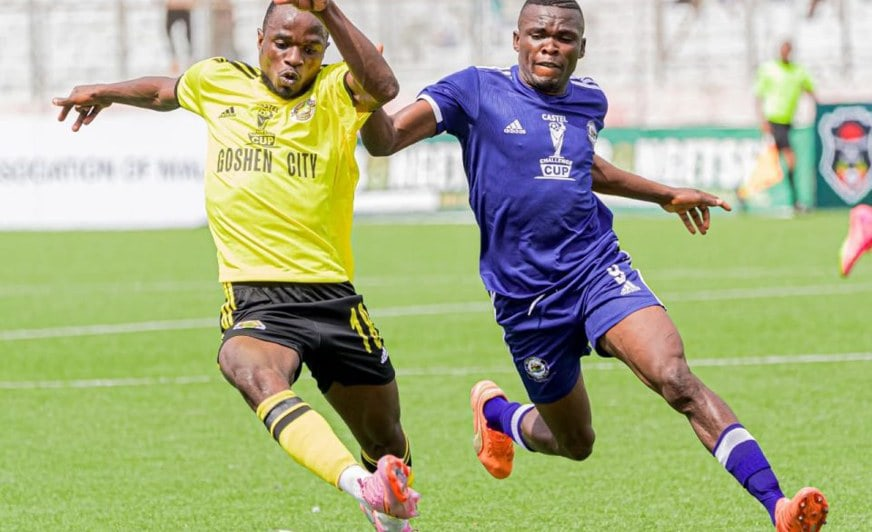
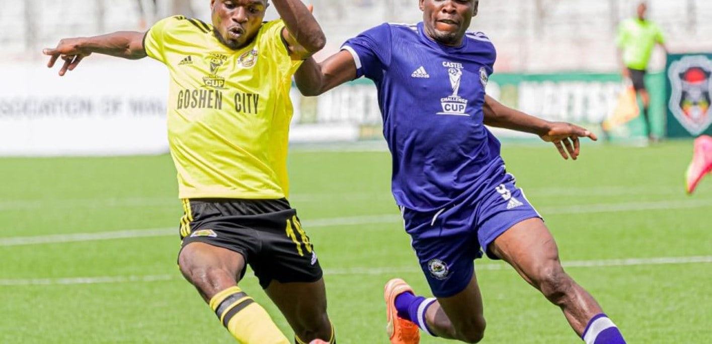
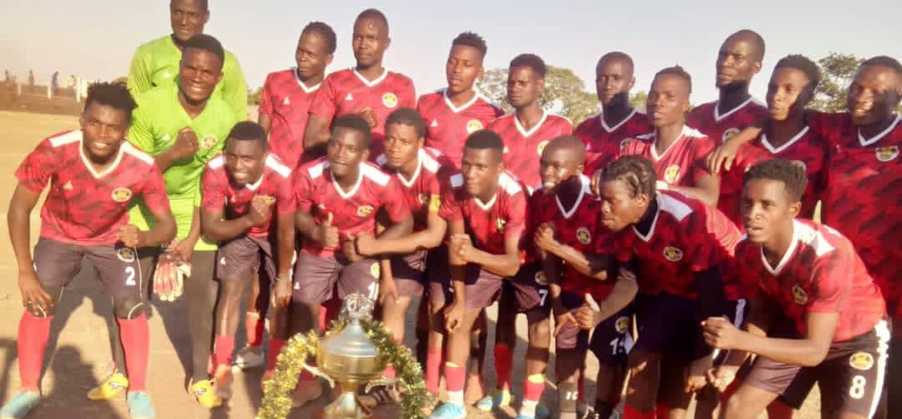

Club history19 February 2026 · 6 min read
The road to a first Castel Cup final
A gritty campaign, a stoppage-time equaliser and the shootout that carried Dedza onto the national stage.

Goshen City Dedza Dynamos
From regional champions to Malawi's biggest stage. Follow the story of the Yellow Boys.
Match centre
Latest from Dedza

Club history19 February 2026 · 6 min read
A gritty campaign, a stoppage-time equaliser and the shootout that carried Dedza onto the national stage.
5 October 2026 · Club
Reported leadership changes mark the next chapter in the club's growth.
21 February 2026 · Match report
Chikondi Mbeta scored late as the Yellow Boys contested their first final.
Our identity
Born in 2017 and promoted to Malawi's elite league within four years, Dedza Dynamos carries the energy of a district that believes in its own.
Discover our history →The journey
Dedza Dynamos Football Club is founded.
Central Region title and promotion secured.
The club finishes ninth in its first elite season.
Clement Nyondo leads the league's scoring.
A first Castel Challenge Cup final.
People in the record
Historical contributors — not a current squad list.
2023 Golden Boot
Semifinal equaliser
2026 final scorer
Current squad profiles will be added after club confirmation.

Our people
Get fixtures, results and the latest verified club stories in one place. An official WhatsApp channel will be linked here once confirmed by the club.
No unverified invite links. No invented follower counts.